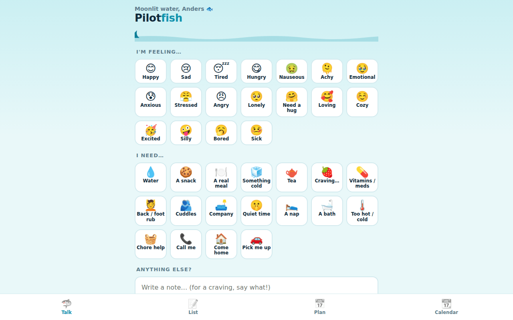

Talk
Eighteen feelings and eighteen needs, an optional note, and replies in one tap: on my way, got it, ten minutes, calling you, love you.
The pilotfish swims beside the shark its whole life. This is that, for two people: what to grab, how you feel, what you need, and a one-tap answer.
Private · two people · installable on both phones

Most of what two people need to tell each other during a day is small: I'm tired, bring water, can you call, on my way. Texting turns each of those into a conversation. Pilotfish makes them taps. Pick how you feel and what you need, add a note if you like, and the other phone lights up with a one-tap answer.
Around that sits everything a household shares: one shopping list with real store windows, and one calendar where everything with a date lands by itself.
Eighteen feelings and eighteen needs, an optional note, and replies in one tap: on my way, got it, ten minutes, calling you, love you.
A high-urgency alert that stays on screen until it's seen, with a reminder to call emergency services when it's medical.
Every store opens as aisles of picture tiles, restaurant presets come with menus, and each store learns your usuals.
Events either person adds, plus every dated pickup, delivery and appointment from the rest of the app.
One page, a Cloudflare Worker and Web Push. Pushes carry no content; the phone asks the server for the latest signal and turns it into words.
Pilotfish is built for one pair of people and signs in with their own accounts. It isn't open for sign-ups.
Always swimming beside you.
more in signals & commskeep scrolling · it opens right here